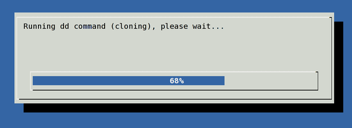

You need to use the pv command which allows you to see the progress of data through a pipeline. You need to install pv command as described here. Once installed, type the following commands to see the status bar. Please note that if standard input is not a file and no size was given with the -s option, the progress bar cannot indicate how close to completion the transfer is, so it will just move left and right to indicate that data is moving. It will also show average MB/s rate:
Examples: Use pv command monitor the progress of dd
WARNING! These examples may crash your computer and may result into data loss if not executed with care.
Copy /dev/sda to to /dev/sdb:
pv -tpreb /dev/sda | dd of=/dev/sdb bs=64M |
OR
pv -tpreb /dev/sda | dd of=/dev/sdb bs=4096 conv=notrunc,noerror |
Sample outputs:
You can create a progress bar and display using the dialog command as follows:
(pv -n /dev/sda | dd of=/dev/sdb bs=128M conv=notrunc,noerror) 2>&1 | dialog --gauge "Running dd command (cloning), please wait..." 10 70 0 |
Sample outputs:

Fig.02: Show the Status of dd Command in progress using pv and dialog command
Examples: Use gnu dd command from coreutils version 8.24 or above only
Pass the progress option to see periodic transfer statistics using GNU dd command:
# dd if=/dev/sda of=/dev/sdb bs=1024k status=progress
Here is another example from my Mac OS X/MacOS:
$ sudo gdd if=ZeroShell-3.6.0-USB.img of=/dev/disk5 bs=1024k status=progress
Sample outputs:
Fig.03: GNU dd displaying progress
$ tmux
$ dd if=/dev/urandom of=/dev/null bs=16k count=100000
+
$ ps aux | grep dd
(show pid)
$ kill -SIGUSR1 (pid)
$ tmux attach
65260+0 enregistrements lus
65259+0 enregistrements écrits
267300864 octets (267 MB) copiés, 16,5587 s, 16,1 MB/s
OR you could use dcfldd, if your distro/OS has it (Debian does). The awkward acronym stems from it being the Department of Defense Computer Forensics Lab’s version of dd.
or try dcfldd, the Department of Defense Computer Forensics Lab’s dd.
killall -USR1 dd
And to make it beautiful, instead of running dialog, you can run zenity –progress –title “Working…”.
watch -n 10 ‘killall -USR1 dd’
I use this command to create my Raspberry Pi compressed images
(pv -n /dev/sda | gzip -c | dd of=GentooV2.gz bs=128M conv=notrunc,noerror) 2>&1 | dialog –gauge “Dump running” 10 70 0
It’s better looking than kill -USR1
It may look nicer than kill -USR1 but it’s more complicated to set up. And just hitting up then enter in a second terminal after doing it once is much easier.
*not much easier. Just simple. Typo. The point is you can just check up on it rather than having another process always polling the dd process (dd actually does stop to report the progress).
You wrote:
Copy /dev/sda to to /deb/sdb:
Surely you meant Copy /dev/sda to to /dev/sdb:
That’s dev, not deb. Please correct this, and try to heed your own warning about executing with care.
New version of coreutils (8.24) adding a status progress to dd tool:
Usage on Xubuntu 15.10:
Open terminal shell and type these commands:
Run dd as root:
sudo ./dd if=/dev/sdc of=/dev/sda conv=noerror status=progressYou will see: Bytes, Seconds and Velocity (Bytes/seconds)
To check versions of dd:
Native:
New (cd coreutils-8.24/src):